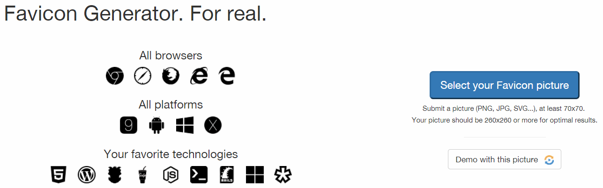
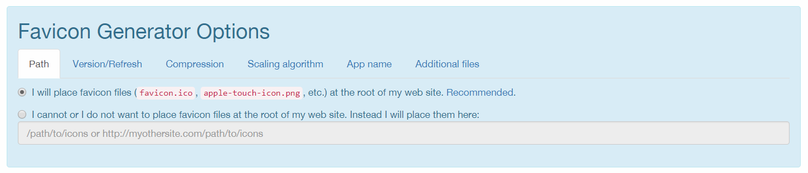
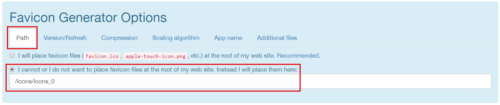
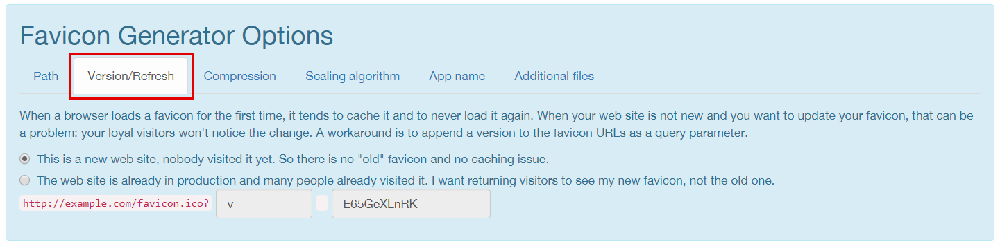
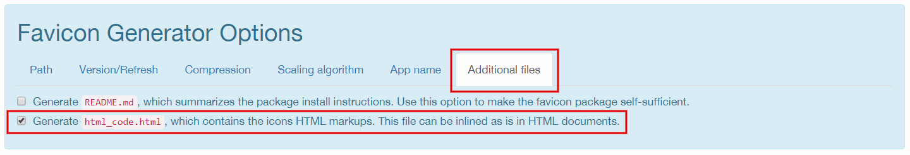
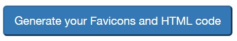
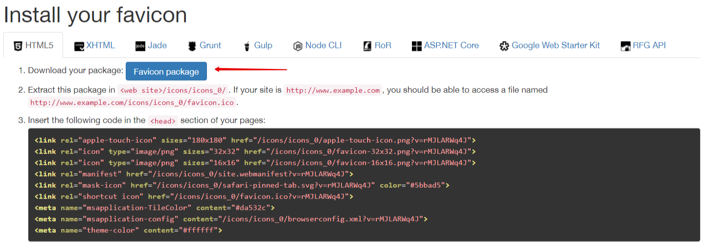
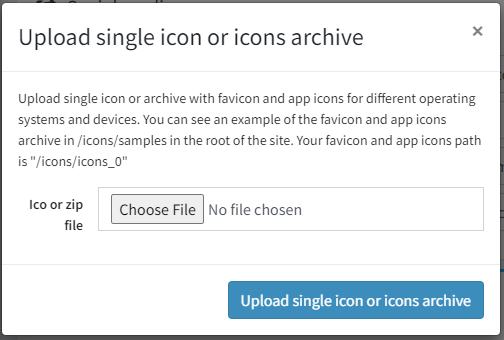
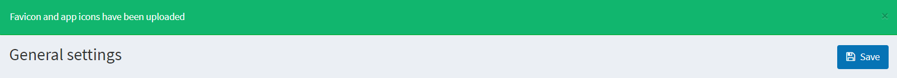

Uploading favicons
Starting from version 4.20, you can automatically upload favicons through the admin area.
Note
For a multi-store case, you need to repeat this uploading procedure for each store.
To upload favicons, go to Configuration → Settings → General settings. The Favicon and app icons panel will be displayed:

Click the green Upload single icon or icons archive button; the file selection dialog will be opened:

Here, you need to copy the path to your icons (it varies depending on the store and virtual directory). For example,
/icons/icons_0.There are several options for what to upload, depending on how friendly your site favicons should be for various devices:
The most complete option is to use one of the favicon generators. In this manual, we will show an example of using a RealFaviconGenerator. Thanks to this service, the full favicon package will be uploaded in a few clicks.
Go to this generator main page where you will be invited to choose a picture for the favicon 
After selecting a picture and clicking Continue with this picture, you will be redirected to the next page. Here you can adjust the display settings of favicons for specific devices and applications - iOS Web Clip, Android Chrome, Windows Metro, macOS Safari, and others. The service will automatically show display examples. You can customize them to your needs or leave the default ones.
At the bottom of the same page, you can find the Favicon Generator Options panel. 
In this section, you must set certain settings. In the Path tab, select the option
I cannot or I do not want to place favicon files at the root of my web site. Instead I will place them hereand specify the path from step 2. In the Version/Refresh tab, select the option depending on whether your site is already in production. The setting description will help you with this. 
In the Additional files tab it is necessary to select the option to generate an html file in the package. 
Now that all settings are set, click the button to generate. 
Get your favicon package. 
The simplest option is to only use the favicon.ico file, which has been successfully used on many sites for a long time, until devices with different screen resolutions appeared.
Find a sample favicon package that is located in
wwwroot/icons/samples/directory and copy it.In the new package, delete all files except for favicon.ico and html_code.html.
Replace the file favicon.ico in this package with your new favicon.
Edit the html_code.html file. Leave the only line there:
<link rel="shortcut icon" href="/icons/icons_0/favicon.ico">, assuming that/icons/icons_0is the path from the step 2.Save these two files into a package. Your favicon package is ready.
An intermediate option is using the full favicon package without a generator.
Find a sample favicon package that is located in
wwwroot/icons/samples/directory and copy it.Replace the pictures in the new package with your own ones considering the original sizes.
Edit the html_code.html file, replace all entries of the
/icons/icons_0with the path saved in step 2.Save this package. Your favicon package is ready.
Return to the admin area with a prepared favicon package to upload. Select the desired file and click Upload single icon or icons archive. 
Ensure your package is successfully uploaded. 
To see the new favicon on the site, you should clear the cache in the admin area and browser, then reload the page.
Tip
To create a favicon package, you can use any generators, third-party services or do it manually. The only requirement is the existence of the html_code.html file with the html code, which will be placed in the <head> element of the site pages.